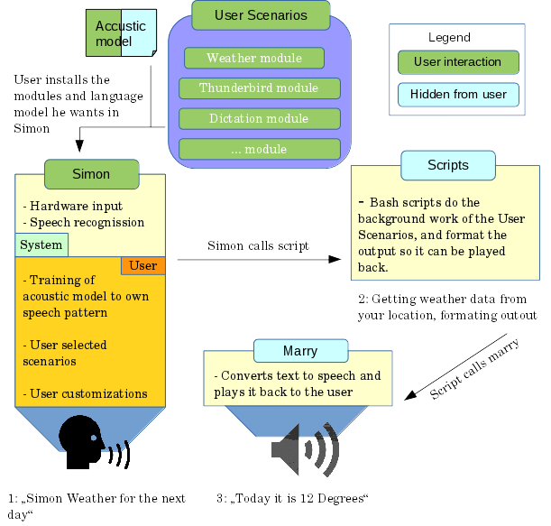

What is it ?
It is your own personal electronic butler like in the Iron Man movies for your Linux desktop :-)
This is achieved with different software which is bundled together by me to make the whole experience somewhat user friendly.
What languages are supported ?
Simon/Linjark can support any language if there is a language model available and scenarios are written for it.
Currently supported:
- German (language model and scenarios)
What can I actually do?
Currently these Scenarios are implemented:
- Window Management -> eg: Close a window with your voice
- Starting of programs -> eg: Using your voice to start Firefox
- Dictating an Email with Thunderbird -> eg: If your hands are full
- Controlling Mypaint -> eg: Use your voice to select different brush sizes while you draw with your hands.
- and many more....
For an in detail view what you can do, look into the grammar file of Linjark
Will you send my data to the Cloud
Normally not. Simon, the front-end of this little project uses the SPHINX language model and tools. SPHINX does not use cloud computing to understand what you are saying,
instead it relies on pre-formed sentences from different scenarios that you train. If you train a sentence enough it will understand you. After training it needs to recompile its
language model locally on your machine.
However there are some modules who will send data to the could because you can say a random word and it it not possible to form a pre-learned sentence with a random word.
A good example is the translate module: It will rely on the pre-formed sentence: "Simon translate to spanish" when you speak that sentence simon will pick it up and
after a ping sound you can say any random word. This will then be sent to Google. Google will return what you have said and Linjark will then translate this word into spanish.
Linjark will not listen into your home like other solutions do. You can always decide not to use these modules anyway.
Even the modules who require cloud computing are only started when you ask them and only about 4 seconds of sound/voice is recorded.
If you don't believe it look into the code :-)
How does all this work ?
When you speak in your microphone, Simon, an open source speech recognition program is comparing your recorded speech with the data (words) in the language model, if it finds the words in the model, it can understand you. Then it will launch some scripts according to what you say eg. check the weather for you. MarryTTS is then used to answer you (default: in German) with synthesized speech and display the requested information with the scripts.
This looks then something like this:
Let's get started
This git repository is set up with the goal of providing a more easy solution for German speaking people to control their PC, house or whatever with their voice with open source and free solutions.
However this stuff can also be adapted to any other language even other operating systems. As long as there is a language model with the words you need to control something for it.
The more easiness comes in an install.sh that will install some of the components needed for successful speech recognition and provide guidance for installing the rest and also providing some Scenarios for Simon to use :-D.
Till now this is not really an easy task, mostly because the open source German language model does not support the right words for controlling applications and devices. But also because their are not many scenarios written for Simon and scripts to implement things in an easy way or another program who would scan the pocketsphinx output and launch some stuff (at least of that I know of). This project will change that!
Jump right in and see the contents below :-)Contents:
Status of the project/model
1. Start the installation
2. Basic Configuration of Simon
3. Install some Linjark-Modules
4. Some things you should know
5. How to train properly / Common errors
6. Have a blast!
Aim of this project
Inspiration
Used technologies
Troubleshoot
Care to help?
License
Status
ATTENTION: Due to some errors in (some) scenarios the compilation of own acoustic models is broken atm. Also some modules are broken too. I'm working on a fix. 25/10/15-
Pretty good model is online, secarios and scripts can be made.
- The current model has many words for controlling and getting information of various sources. -> There are some things missing but this is normal as along the way some new things always get added......
-
As Google Speech API v2 now requires personal keys, these modules will (for now) not work out of the box:
- Translation (translate words in other languages)
- Internetsearch (search for something you said on the net)
-> If you are interested, read the "Get_GOOGLE_API_Key.md" and give me some feedback how tey work for you :-D
Always check out: linjark_grammar#.ods for progress and the FAQ.md file
This project is considered active in development and not stable or bugfree!
Aim of this project
- Add missing words to the German open source language model. (already over 800 words added)
- Write the scripts for the backend functions.
- Write Scenarios for Simon in German to use the backend-scripts and the German language model.
Raise awareness of free, open source speech recognition, particularly the German model.
-
Further down the line, write a conkyrc script to implement "Rainmeter" like functionality for the Linux desktop.
- A graphics designer would be needed here for the background image! Please help if you can draw :-D
- Get all of this stuff onto the Raspberry PI or a similar micro computer (ARM) for home automation.
Inspiration
This project is heavily inspired by the Iron Man movies and the speaking JARVIS computer. Also some inspiration is drawn from the J.A.R.V.I.S project for Microsoft Windows. (Who uses a non open source speech model to do his work!)
Just check out Youtube for some videos etc.
For the English version of the language model / speech recognition check out Blather: https://gitorious.org/blather/pages/Home or Youtube: https://www.youtube.com/watch?v=gr1FZ2F7KYA
Structure / Used technologies
- Backend: language model
- Middleware: Bash-scripts who do various things and MarryTTS
- Frontend: Simon
BACKEND: language model
For a PC to understand humans it needs to know how they sound and what words they use. It does that with a language model. It is the brain of this project :-D There are two types of models that describe language - grammars and statistical language models. Grammars describe very simple types of languages for command and control, and they are usually written by hand or generated automatically with plain code (Simon scenarios).
However, for now not even all command and control words are in the open source GERMAN language model.
I use the German language model from Voxforge: http://voxforge.org/
More specific the on from Guenter: http://goofy.zamia.org/voxforge/
I rely on Guenter to publish new language models (as they won't compile on my machine for some miraculous reason :-( ). I work actively with him to add new words into the model who can than be understood by Simon (speech recognition) and used for controling various things.
If you want to know more about the whole model compilation business check out his awesome tools: https://github.com/gooofy/voxforge/
MIDDLEWARE: bash scripts do the stuff .-)
Here is most of the work for my purpose done. Get the local weather data and play it back to you, get some jokes from the net, switch on a lamp ?? It is all done here. I use bash scripts for this because they are easy to understand and to modify if the web page does change their information layout etc. Also they don't need much knowledge so many people can contribute.
MarryTTS is used to generate spoken responses and output of the data collected. -> https://github.com/marytts/marytts
FRONTEND: Simon
Great program, it is very powerful and heart of this project! The dev is also really helpful and nice guy! It handles all the basics like microphone calibration, recording what you are saying, comparing that with the language model and launching commands etc
Other than that I use Simon to do various things from me:
- Break down the functionality of the scripts into modules (called Scenarios), so someone can only use the "Search" module and don't has to install all the other modules like Translation etc.
- It is possible to train the speech model to your voice so it understands you (better) (very important!)
- Provides and easy method to change the activation sentences to your likening
- Can do many more things on its own without the scripts :-D
Check out Simon here: http://grasch.net/blog and here https://simon.kde.org/
Youtube video: http://www.youtube.com/watch?v=x_9ImaiOISs&list=UUiVicBYegdFX9BnYOD2EMNw (quite old but you sould get the idea :-D)
Trouble ?
As this is for the German model I do obviously speak German and you can use that language if you contact me :-)
Please open a "Issue" here on github with a description what went wrong! Thanks.
Want to help !?
Just get in touch! Help is always needed and there is plenty to do!
License
-
This program is free software: you can redistribute it and/or modify
it under the terms of the GNU General Public License as published by
the Free Software Foundation, either version 3 of the License, or
(at your option) any later version.
This program is distributed in the hope that it will be useful, but WITHOUT ANY WARRANTY; without even the implied warranty of MERCHANTABILITY or FITNESS FOR A PARTICULAR PURPOSE. See the GNU General Public License for more details.
You should have received a copy of the GNU General Public License along with this program. If not, see <http://www.gnu.org/licenses/>.